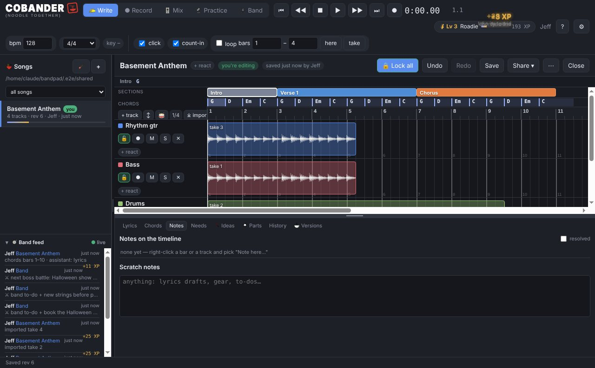

Write songs with your band, from four different houses
Somebody records a riff at 11 pm. By 11:01 it is on everyone else's screen, on its own track, in the right spot in the song. No uploads, no accounts, no monthly plan — the cloud folder your band already shares is the whole system.
Free — the whole app, one song per band. Intel Mac? Intel Mac download.

One song, the whole band, no file juggling
Every song lives in your band's shared folder. When the drummer adds a take at lunch, it lands on its own track for everyone, lined up with the rest of the song. Nobody emails a bounce called "chorus idea FINAL v3".
Two people can work on the same song at once. Song and track locks keep you from stepping on each other, and whatever you change is merged in, not overwritten.
Built for writing, not just recording
Lay out the parts — intro, verse, chorus, bridge — and drag them around. Put chords on a chord lane, pin lyrics to where they are sung, drop notes on the timeline ("try a half-time feel here"), and @mention whoever needs to see it.
A parts bin keeps the riffs that don't have a song yet, and your own noodle pad is there for messing around without touching the band's songs.
Know where every song stands
Each part gets a stage, from idea to approved, and anyone can flag a part for a redo with a short note. The song list shows how many parts are done, and the band feed shows who did what while you were at work.
Works with what you already have
Point Cobander at a folder in Google Drive, OneDrive, iCloud Drive or Dropbox — every bandmate picks the same one. Windows and Mac work together. Your songs never go anywhere but that folder.
Questions
Do we all need the same computer?
No. One person on a Mac and three on Windows works fine — everything is files in the shared folder.
Do we need to be online at the same time?
No. Work whenever you want; the folder syncs your changes to everyone else when they open Cobander.
Is there a server or an account?
No. There is no Cobander server and no account. The cloud folder your band shares does the syncing.